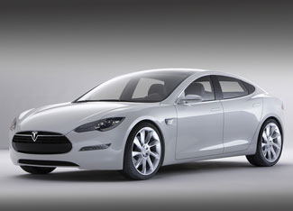

Tesla Motors started taking orders last week for its Model S, an all-electric family sedan that seats seven and can travel 300 miles per charge.
The company currently sells the Tesla Roadster, a two-seat electric “supercar” that starts at a base price of more than $100,000. Unlike the Roadster sports car, the Model S falls more into the luxury sedan category and is available at about half the cost: $57,400. However, because they are battery-powered, all Tesla vehicles qualify for a federal tax credit of $7,500.
The company points out that if gasoline prices return to $4 per gallon, the Tesla Model S will save enough money to place it on par with a gasoline-fueled sedan priced at $35,000.
Tesla is currently accepting refundable deposits of $5,000 for the Model S and plans to start production in late 2011, with vehicle deliveries starting in 2012.
The company is hoping to finance the construction of the Model S assembly plant using a $350 million federal loan from the U.S. Department of Energy’s Advanced Technology Vehicle Manufacturing Program. If the loan does go through, the Model S will be available with a variety of battery packs, yielding a range of 160, 230 or 300 miles. It can be recharged using a standard 120-volt outlet or a 240-volt outlet (the type used for electric dryers), but it can be recharged in only 45 minutes if the owner has access to a 480-volt outlet. The floor-mounted battery pack is also designed to be changed out in only a few minutes, allowing for battery-swap services.
The Tesla Model S gains a unique advantage from its floor-mounted battery pack: The vehicle has a trunk in back and a trunk in the front. And although its performance will fall short of the Roadster, it will be able to accelerate to 60 miles per hour in less than six seconds, with an electronically limited top speed of 130 mph. A sports version will cut this 0-to-60 mph time to less than five seconds. Like the Roadster, the Tesla Model S will channel its power through a single-speed gearbox.
|
 TESLA MOTORS The Model S takes three to four hours to charge using a 240-volt outlet, or as few as 45 minutes using a 480-volt outlet. |
|
|